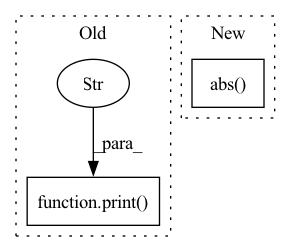

Pattern ID :6395

Before Change
// print("candidate centers: ", [len(i) for i in candidate_centers])
print("target class: ", target)
print("detect: ", detect_result)
print("attack: ", attack_result)
print(attack_succ)
print(detect_succ)
print()
result = ["draw"] * (self.iteration - 1)
After Change
// seq_centers: (iter, 1, C, H, W) seq_bias: (iter)
// seq_centers = seq[:, 0] // debug
if "start" in self.output:
mean_error = (seq_centers[:, 0] - seq[:, 0]).abs().flatten(start_dim=1).max(dim=1)[0]
print("Mean Shift Distance: ".ljust(25) + "avg {:<10.5f} min {:<10.5f} max {:<10.5f}".format(
mean_error.mean(), mean_error.min(), mean_error.max()))
print("Bias Estimation: ".ljust(25) + "avg {:<10.5f} min {:<10.5f} max {:<10.5f}".format(
In pattern: SUPERPATTERN
Frequency: 3
Non-data size: 2
Instances
Fragment ID: 22281262
Project Name: ain-soph/trojanzoo
Commit Name: bc3d366258b45942115b6b86ae8466dac52ac154
Time: 2020-06-30
Author: ain-soph@live.com
File Name: trojanzoo/defense/adv/advmind.py
M Class Name: AdvMind
N Class Name: AdvMind
M Method Name: inference(3)
N Method Name: inference(3)
M Parent Class: PGD
N Parent Class: PGD
M File Name: trojanzoo/defense/adv/advmind.py
N File Name: trojanzoo/defense/adv/advmind.py
M Start Line: 83
M End Line: 123
N Start Line: 87
N End Line: 127
'>
Before Change
err = np.mean(
np.abs(np.concatenate(coeffs) - torch.cat(coeffs2, -1).squeeze().numpy())
)
print("haar coefficient error scale 2", err, ["ok" if err < 1e-4 else "failed!"])
assert err < 1e-4
def test_conv_fwt_haar_lvl2_odd():
After Change
print("haar coefficient error scale 2", err, ["ok" if err < 1e-6 else "failed!"])
assert np.allclose(pywt_coeffs, ptwt_coeffs)
rec = waverec(coeffs2, wavelet).squeeze().numpy()
err = np.mean(np.abs((data - rec)))
print("haar reconstruction error scale 2", err, ["ok" if err < 1e-6 else "failed!"])
assert np.allclose(data, rec)
'>
Fragment ID: 22281261
Project Name: v0lta/pytorch-wavelet-toolbox
Commit Name: c52a0038ca7ceb817da834840a1655d55ff6f1a3
Time: 2021-07-02
Author: moritz@wolter.tech
File Name: tests/test_convolution_fwt.py
M Class Name: AnonimousClass
N Class Name: AnonimousClass
M Method Name: test_conv_fwt_haar_lvl2(0)
N Method Name: test_conv_fwt_haar_lvl2(0)
M Parent Class:
N Parent Class:
M File Name: tests/test_convolution_fwt.py
N File Name: tests/test_convolution_fwt.py
M Start Line: 42
M End Line: 49
N Start Line: 22
N End Line: 56
'>
Before Change
attr_batch = ig_explainer.attribute(test_images, baselines=baseline_features)
current_attribution[n_batch*batch_size:(n_batch*batch_size+len(test_images))] = attr_batch.cpu().numpy()
attribution_delta = np.sum((current_attribution - prev_attribution)**2)
print(f"\n Epoch {epoch + 1}/{n_epochs} \t train loss {train_loss:.3g} \t val loss {val_loss:.3g} \t "
f"attribution delta {attribution_delta:.3g}")
attribution_deltas.append(attribution_delta.data)
prev_attribution = current_attribution
After Change
dl_attribution[n_batch * batch_size:(n_batch * batch_size + len(test_images))] = dl_attr_batch.cpu().numpy()
//plot_image_saliency(test_images[0], ig_attr_batch[0])
//plot_image_saliency(test_images[0], dl_attr_batch[0])
print(np.sum(np.abs(ig_attribution-dl_attribution)))
"""
test_images, _ = next(iter(test_loader))
'>
Fragment ID: 22281260
Project Name: jonathancrabbe/label-free-xai
Commit Name: d06296865f4b015262b9fea2367805e8e684dc6e
Time: 2021-11-25
Author: jonathan.cr1302@gmail.com
File Name: experiments/mnist.py
M Class Name: AnonimousClass
N Class Name: AnonimousClass
M Method Name: denoiser_mnist(4)
N Method Name: denoiser_mnist(4)
M Parent Class:
N Parent Class:
M File Name: experiments/mnist.py
N File Name: experiments/mnist.py
M Start Line: 30
M End Line: 68
N Start Line: 48
N End Line: 75